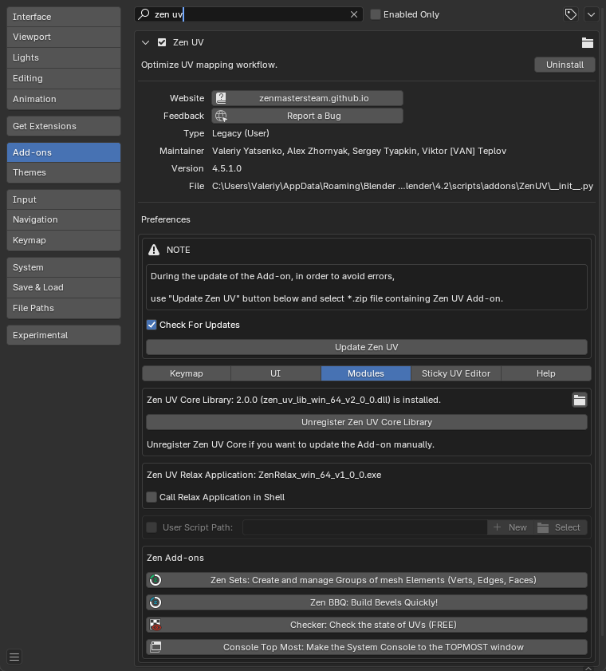
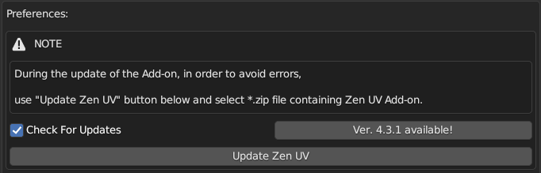
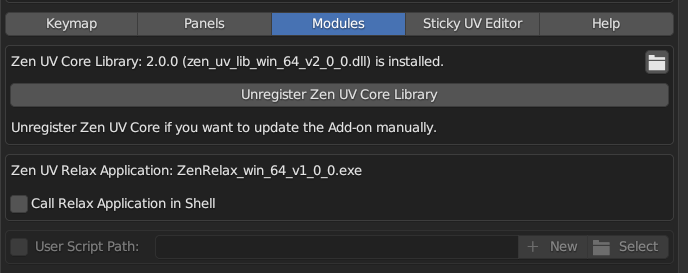
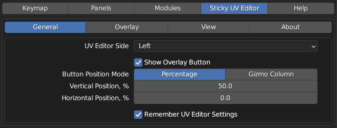

Preferences
To open Zen UV Preferences go to Blender left top corner Edit -> Preferences -> Add-ons -> Zen UV.


Update Zen UV
Here you can find information about available new versions and update Zen UV using Update Zen UV button. More about installation and update process you care read here.

Keymap
Configure shortcuts on some important operators of the addon.

Zen Modifier Key
The key is a modifier that is used in combination with a mouse.
Some systems, for example, Advanced UV Maps, involve the use of an additional key along with a click. Depending on the navigation settings, this key may not work. If this is your case, change Zen Modifier Key to a suitable one.

Modules
Panel for managing Zen UV Core Library and Zen UV Relax Application.

Also here you can set your custom User Script.
Sticky UV Editor
Sticky UV Editor is a system that allows opening UV Editor on the left or the right from the active 3D Viewport or as a separate window. Information about Sticky UV preferences you can find here.

Help
Here you can find buttons with links to Documentation, Discord and subpanel Examples.